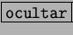
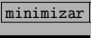
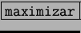
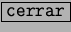
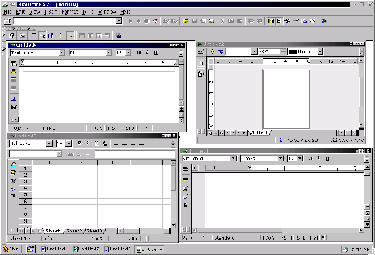

Next: El menú Ventana
Up: StarDesktop: El Entorno de
Previous: Creación de documentos
Índice General
StarOffice es capaz de manejar simultáneamente hasta 255
documentos. En la figura 5.8 se
muestra un modo de trabajo de StarOffice con bastantes
ventanas. Cuando una ventana de documento está maximizada, sus botones
aparecen a la derecha del menú principal. En cualquier otro caso, las
ventanas presentan un grupo de cuatro botones, que se explican de
izquierda a derecha:
- Botón de . Si se pulsa, la ventana se reduce a la barra
del título y el botón se convierte en el botón de mostrar.
- Botón de . Si se pulsa, la ventana desaparece del
área de trabajo, aunque sigue representada en la barra de tareas.
- Botón de . Cuando se pulsa, la ventana ocupa toda
el área de trabajo.
- Botón de . Cierra la ventana y el documento que contiene.
Figura 5.8:
El StarDesktop con varios documentos cargados
|

|
Proyecto Cursos - LuCAS - http://lucas.hispalinux.es/htmls/cursos.html